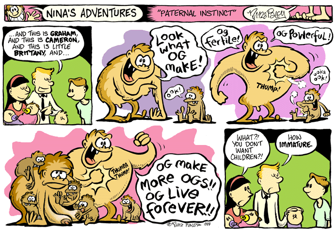
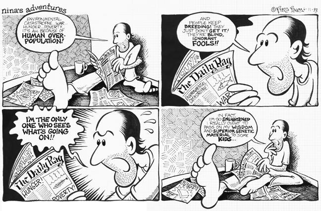
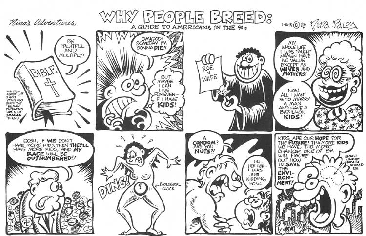
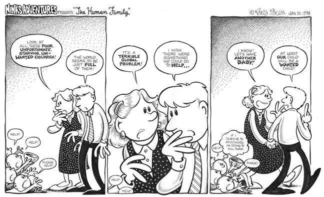
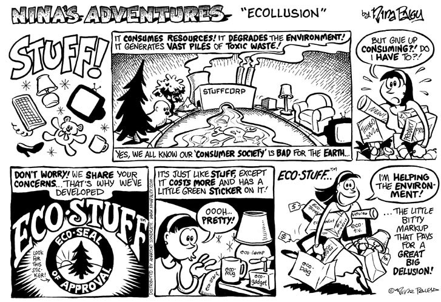
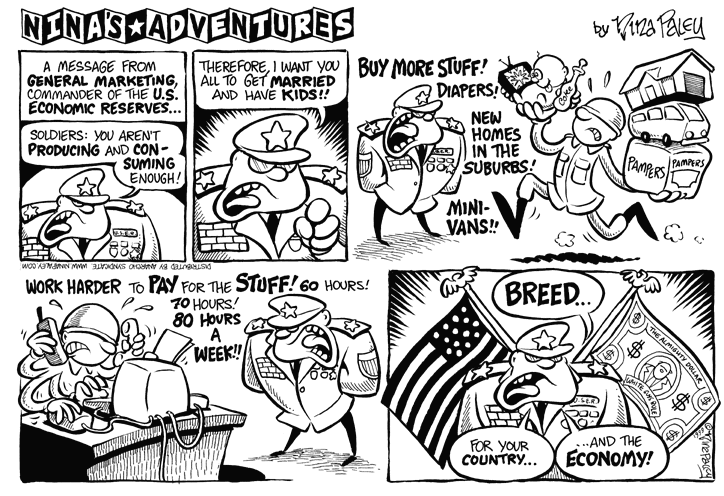
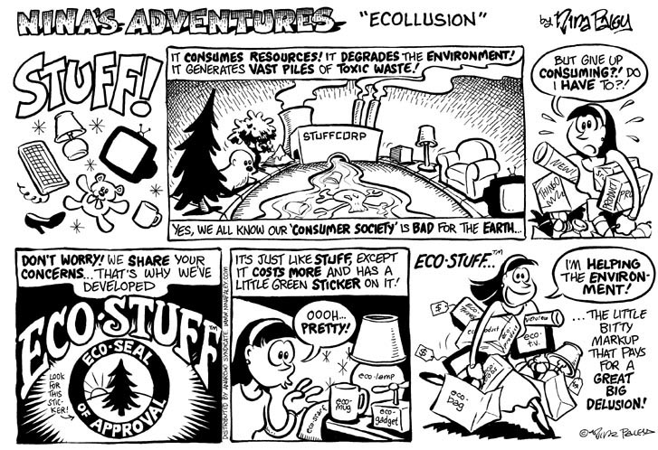
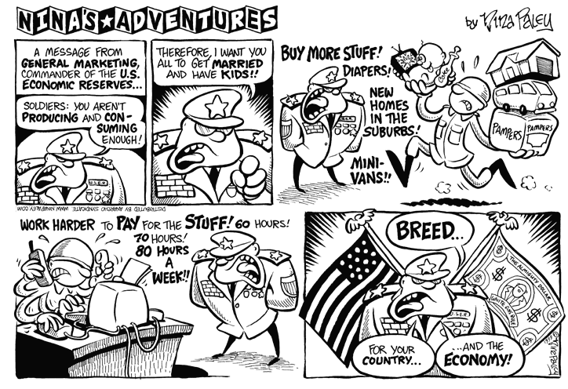
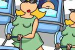

VHEMT-related cartoons
Before she became world famous for her highly-acclaimed feature-length animated adventure Sita Sings the Blues, Nina Paley created many delightful VHEMT-related graphics, cartoons, and animations.   
 





Nina has also created three VHEMT-related animated shorts.

“The Stork” 3:00 min
Little bundles of joy delivered by the mythical stork, with natural consequences.

“The Wit and Wisdom of Cancer” 4:30 min.
What would cancer cells say if they progressed to humanity's advanced level of consciousness? 
“Fertco” 3:00 min
Fertility treatments with big box economy.

Works on this page by Nina Paley are licensed under a Creative Commons Attribution-Share Alike 3.0 United States License. Back to VHEMT Graphics
Back to About The Movement